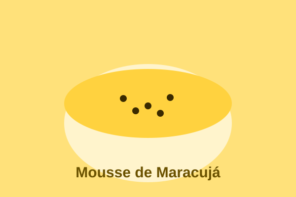

Mousse de Maracujá

O mousse de maracujá é a minha sobremesa favorita: é cremoso, tem aquele equilíbrio perfeito entre doce e azedinho, e leva pouquíssimos ingredientes. Ideal para quando aparece visita de última hora!
Ingredientes
- 1 lata de leite condensado
- 1 lata de creme de leite
- 1 lata de suco concentrado de maracujá (use a lata de leite condensado como medida)
- 1 envelope de gelatina sem sabor (opcional, para firmar mais)
- Polpa de 1 maracujá fresco para decorar
Modo de preparo
- No liquidificador, coloque o leite condensado, o creme de leite e o suco de maracujá.
- Bata por cerca de 2 minutos, até a mistura ficar bem homogênea e cremosa.
- Se for usar gelatina, dissolva-a conforme as instruções da embalagem e bata junto.
- Despeje o creme em taças individuais ou em um recipiente grande.
- Leve à geladeira por pelo menos 2 horas para firmar.
- Antes de servir, decore com a polpa do maracujá fresco por cima.
Dica
Para um sabor ainda mais intenso, deixe o mousse na geladeira de um dia para o outro. As sementes do maracujá por cima dão um toque crocante e deixam a sobremesa ainda mais bonita.